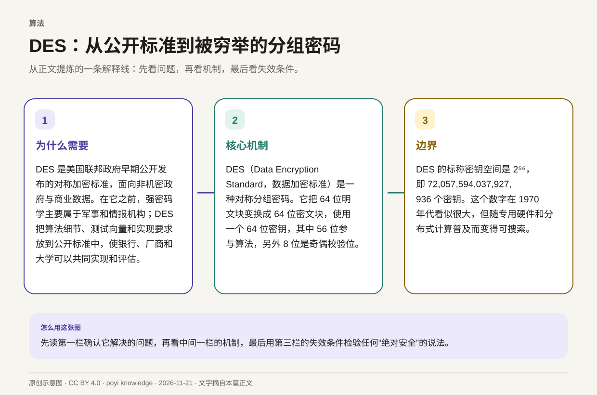
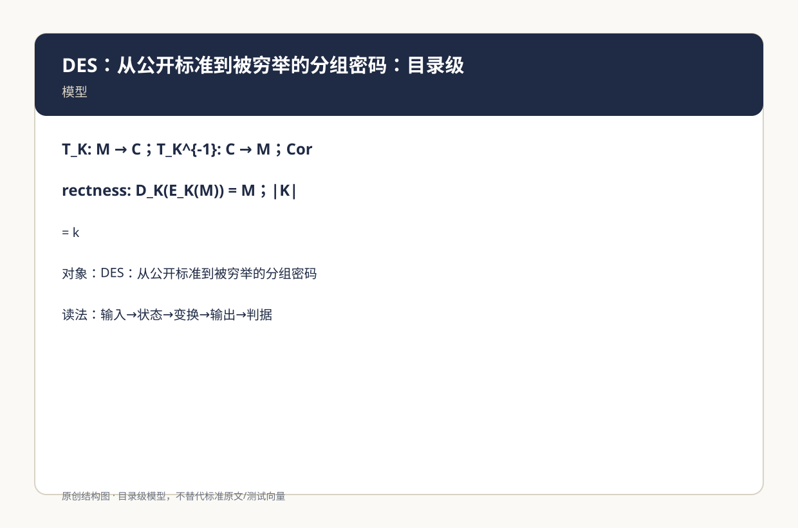

原理与机制
算法：DES 数据加密标准（Data Encryption Standard）。DES（Data Encryption Standard，数据加密标准）是一种对称分组密码。它把 64 位明文块变换成 64 位密文块，使用一个 64 位密钥，其中 56 位参与算法，另外 8 位是奇偶校验位。密钥相同的收发双方可以加密和解密；算法本身公开，保密性取决于密钥——源文的原话是「depends on the secrecy of the」key。DES 的核心是 16 轮 Feistel 结构。先把 64 位输入经过初始置换 IP，分成左右各 32 位，记作 L₀ 和 R₀。第 i 轮的变换是：
R_i = L_{i−1} ⊕ f(R_{i−1}, K_i)
其中 K_i 是第 i 轮的 48 位子密钥。16 轮结束后，把左右两半交换，再经过逆初始置换 FP，得到密文。FP 是 IP 的逆置换：先 IP 再 FP 会回到原块。轮函数 f 做四件事：源文说它「expands the 32-bit right half to 48 bits」（把 32 位右半块扩展成 48 位），用的正是扩展置换 E；与 48 位子密钥异或；把结果切成 8 个 6 位组，分别送入 8 个 S 盒，每个 S 盒输出 4 位，共 32 位；最后用置换 P 重排这 32 位。S 盒是 DES 唯一的非线性部分，也是差分和线性密码分析的主要研究对象。子密钥由密钥调度生成。64 位密钥先经过 PC-1 置换，去掉 8 个校验位，留下 56 位；分成两个 28 位半区，按固定的移位表逐轮循环左移，再经过 PC-2 置换，每次取出 48 位作为该轮子密钥。16 轮共产生 16 个 48 位子密钥，合计 768 位子密钥材料。解密使用同一套硬件或代码：把 16 个子密钥按相反顺序使用即可。Feistel 结构保证每一轮都可逆，即使轮函数 f 本身不是一一映射；这是它相对 SPN 的一个工程特点。

为什么重要
DES 是美国联邦政府早期公开发布的对称加密标准，面向非机密政府与商业数据。在它之前，强密码学主要属于军事和情报机构；DES 把算法细节、测试向量和实现要求放到公开标准中，使银行、厂商和大学可以共同实现和评估。它因此成为现代分组密码工程和公开密码分析的起点之一。DES 也把标准生命周期具体化：一个算法可以被广泛部署、反复确认，仍然会因为密钥空间和计算能力的变化而退出。NIST 的历史回顾指出，DES 原本预计的使用寿命约为 15 年，实际却在联邦遗留系统中使用了数十年，直到 2005 年才退出。它带动了配套生态：工作模式标准、消息认证、密钥管理、硬件加速和测试验证都围绕 DES 发展。FIPS 81 定义了 ECB、CBC、CFB、OFB 四种工作模式；这些模式后来被其他分组密码继承。理解 DES 也是理解 AES 设计取舍、3DES 过渡，以及分组长度与密钥长度这两类安全问题的基础。
应用与实例
DES 的典型部署包括政府敏感但非机密的数据、金融交易和较早的网络协议。NIST 历史记载，DES 被 ANSI 采纳为 X3.92 数据加密算法，用于保护金融信息；在零售银行中，DES 保护银行卡交易的个人识别码（PIN）。它也被 ISO 采纳为 DEA-1，并广泛出现在当时的软硬件密码产品中。DES 通常不单独使用，而是放在工作模式里。ECB 模式对每个 64 位块独立加密，相同的明文块产生相同的密文块；CBC 模式把前一个密文块与当前明文块异或，隐藏重复模式，但需要初始向量和正确的填充处理；CFB 和 OFB 把分组密码变成流式生成器。模式解决的是如何使用分组密码，不能弥补 56 位密钥或 64 位分组长度的根本限制。3DES/TDEA 是 DES 的延伸：用三个 DES 密钥做加密—解密—加密（EDE）。TDEA 的密钥束配置和现代使用限制属于 3DES 实体，本文不展开。FIPS 46-3 在 1999 年把 TDEA 列为联邦认可的算法，同时把单 DES 降为仅限遗留系统。

边界与攻击面
DES 的标称密钥空间是 2⁵⁶，即 72,057,594,037,927,936 个密钥。这个数字在 1970 年代看似很大，但随专用硬件和分布式计算普及而变得可搜索。1998 年，EFF 的 Deep Crack 机器在不到三天内完成了公开的 DES 挑战，打破了此前由大量联网计算机保持的 39 天纪录。对今天的攻击者，56 位密钥不构成可接受的安全边界。以 10⁹ 个密钥/秒估算，穷举 2⁵⁶ 个密钥约需 7.21×10⁷ 秒，约 834 天或 2.2834 年；以 10¹² 个密钥/秒估算，约需 20.02 小时。这只是算术下界，不含候选筛选、密钥验证和现实并行开销。它说明 DES 的问题不是实现不够快，而是源文所写的「is the size of the key space」（问题在于密钥空间的规模）。### 差分与线性密码分析
S 盒是 DES 的非线性核心。1990 年代的差分和线性密码分析显著削弱了它的理论安全边际。差分密码分析利用明文差与密文差之间的高概率关系；对完整的 16 轮 DES，公开结果需要约 2⁴⁷ 个选择明文组成的池，以取得约 2³⁶ 个可用密文。线性密码分析利用明文、密文和密钥位之间的线性近似；1994 年的实验对完整 DES 使用约 2⁴³ 个已知明文，并在 50 天内恢复全部 56 位密钥。这些数据量本身已不现实；它们说明分组密码的安全性不能只靠密钥长度解释，也提醒数据复杂度不等于完整攻击成本。### 弱密钥、半弱密钥与互补性
DES 的密钥调度存在结构性问题：4 个弱密钥会使所有子密钥相同，因而加密两次回到明文；12 个半弱密钥（6 对）会使一对密钥互为逆运算；此外还有互补性：如果用密钥 K 加密明文 P 得到 C，那么用 K 的按位取反加密 P 的按位取反，会得到 C 的按位取反。这些都是算法结构的性质，不是实现错误。它们不会单独破解 DES，也不改变随机密钥下的穷举成本，但实现者必须拒绝这些特定密钥。DES 的块只有 64 位。在 CBC 等模式中，随机选择明文时，约 2³² 个块后出现相同密文块的概率变得显著；这对应约 32 GiB 的数据量。Sweet32 类攻击利用这一生日碰撞，在长连接中恢复部分明文。分组长度因此和密钥长度一样是安全参数：即使密钥足够长，64 位块也不适合现代高吞吐协议。FIPS 46-3 于 2005 年撤销（留存件只支持到年份，具体撤销日期本档无留存正文可证）。NIST SP 800-67 Revision 2 于 2024 年 1 月 1 日撤销，TDEA 不再作为批准的块密码；撤销说明允许它在已有保护数据的解密、密钥解包和 MAC 验证中继续使用，但不再用于新的加密保护。DES 本身只应出现在遗留系统、历史教学和兼容性测试中；新系统应使用 AES 或其他现代算法。
历史与背景
1970 年代初，美国国家标准局（NBS）启动一个面向联邦机构和商业部门的对称密钥算法标准项目，并公开征集候选算法。1974 年，NBS 收到 IBM 提交的算法；IBM「had recently developed a family of cryptographic algorithms」（此前刚开发出一族密码算法），用于金融交易保护（例如 ATM）。NBS 把 IBM 的算法用作「algorithm as the basis for its proposed」DES（以它作为拟议 DES 的基础），并在 1976 年举办公开研讨会分析其安全性和实用性。1977 年，NBS 发布 FIPS 46，DES 正式成为美国联邦标准。DES 的标准化过程伴随争议。NIST 历史回顾记载，NSA 参与了算法评估并建议修改，IBM 据此调整了算法；一些批评者怀疑 NSA 故意削弱算法或植入陷门。另一项争议是密钥长度：批评者认为 56 位有效密钥「too short for long-term security」（对长期安全而言太短），Diffie 和 Hellman 在 1977 年发表了对 DES 穷举成本的经典分析。NBS 当时的回应是，DES 足以抵御「practical attack for the anticipated life of the standard」（标准预期寿命内可能发生的实际攻击），并将每五年复审一次。DES 随后被反复确认：FIPS 46 在 1983、1988、1993 和 1999 年获得重申，最终修订为 FIPS 46-3。1998 年，EFF 的专用机器在不到三天内完成公开的 DES 挑战，把此前 39 天的纪录大幅缩短。2005 年 FIPS 46-3 撤销，DES 的时代正式结束。TDEA 作为过渡方案继续存在，直到 2024 年也被撤销。
逐步示例与核验
复算示例
取标准或公开测试向量中的一组参数，按“输入—执行—输出”记录：先写出该条目的形式式 (C=\mathrm{DES}_K(P),\quad |P|=|C|=64)；再按规范顺序执行每一步，最后把输出与独立实现或标准向量逐字节对照。若没有可引用的数值向量，就只记录结构步骤，不伪造输出。
参考出处
- Wikipedia search entry for DES 数据加密标准. https://zh.wikipedia.org/w/index.php?search=DES%20%E6%95%B0%E6%8D%AE%E5%8A%A0%E5%AF%86%E6%A0%87%E5%87%86
- Handbook of Applied Cryptography (Menezes, van Oorschot, Vanstone). https://www.cacr.math.uwaterloo.ca/hac/